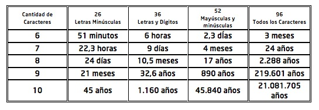

|
|||
CONTRASEÑAS
Una contraseña o clave (en inglés password) es una forma de autentificación que utiliza información secreta para controlar el acceso hacia algún recurso. La protección de la contraseña recae tanto sobre el administrador del sistema como sobre el usuario. Al comprometer una cuenta se puede estar comprometiendo todo el sistema. "Un password debe ser como un cepillo de dientes. Úsalo cada día; cámbialo regularmente; y NO lo compartas con nadie".
Normas de Elección de Claves
Para la creación de una contraseña segura hay que tener en cuenta:
1. No utilizar contraseñas que sean palabras (aunque sean extranjeras), o nombres (el del usuario, personajes de ficción, miembros de la familia, mascotas, marcas, ciudades, lugares, u otro relacionado).
2. No usar contraseñas completamente numéricas con algún significado (teléfono, D.N.I., fecha de nacimiento, patente del automóvil, etc.).
3. Elegir una contraseña que mezcle caracteres alfabéticos (mayúsculas y minúsculas), caracteres especiales (#, %, &, etc.) y numéricos.
4. Deben ser largas, de 8 caracteres o más.
5. Tener contraseñas diferentes en máquinas diferentes. Es posible usar una contraseña base y ciertas variaciones lógicas de la misma para distintas máquinas.
6. Deben ser fáciles de recordar para no verse obligado a escribirlas. Como puede verse en la siguiente tabla, si se utiliza una clave de 8 caracteres de longitud, con los 96 caracteres posibles, puede tardarse 2.288 años en descifrarla (analizando 100.000 palabras por segundo). Esto se obtiene a partir de las 96^8 (7.213.895.789.838.340) claves posibles de generar con esos caracteres.

Más consejos para tener en cuenta:
1. No permitir ninguna cuenta sin contraseña. Si se es administrador del sistema, repasar este hecho periódicamente.
2. No mantener las contraseñas por defecto del sistema.
3. Nunca compartir con nadie la contraseña. Si se hace, cambiarla inmediatamente.
4. No escribir la contraseña en ningún sitio. Si se escribe, no debe identificarse como tal y no debe identificarse al propietario en el mismo lugar.
5. No teclear la contraseña si hay alguien mirando. Es una norma tácita de buen usuario no mirar el teclado mientras alguien teclea su contraseña.
6. No mencionar la contraseña en una conversación. Si se debe mencionar no hacerlo explícitamente diciendo: "mi clave es...".
7. No mantener una contraseña indefinidamente. Cambiarla regularmente. Disponer de una lista de contraseñas que puedan usarse cíclicamente.